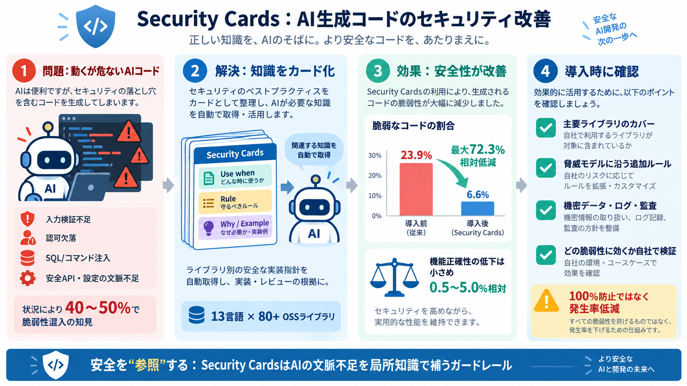

原因
フレームワーク/ライブラリ固有の安全なAPI選択や設定の落とし穴

AIコードを守る知恵
AIが生成したコードを、ライブラリ別の“安全な実装指針”で補強し、セキュリティの失敗を減らす仕組み。
動くが危ない
AIは機能要件を満たす“動くコード”を作れますが、入力検証不足・認可欠落・ファイル処理不備・SQL/コマンドインジェクション等の脆弱性を含み得ます。
知識をカード化
安全実装ノウハウはドキュメントに散らばりがちで、AIが常に把握できません。Security Cardsはそれを“カード”として取り出せる形に整理します。
AIエージェント補助
ユーザープロンプトに応じて関連カードを自動取得し、コンテキストとして実装・レビューに活かします（Security Blueprintも用意）。
失敗率の現実
AIコーディングエージェントが作るコードには、状況によって40〜50%で少なくとも1つの脆弱性が含まれる、という研究知見が出発点です。
代償を測る
セキュリティ改善が“機能の正確性”を壊さないかを検証するため、正しさ（テスト）と安全性（攻撃テスト）を分けて測定します。
Claude Code改善
Claude Code（Opus 4.7）にSecurity Cardsを適用すると、機能テスト合格後でも安全テストに失敗する割合（insecure and correct）が23.9%→6.6%に低減します。
機能は守る
同様にHaiku 4.5でも改善が大きく、機能正確性（functional pass@1）の低下は相対で0.5〜5.0%程度に留まったとされます。
運用の工夫
カード作成に複数層の自動検証と人の確認を組み込み、さらに改良を重ねることで、人手レビューを10%未満まで削減したと説明されています。
筋の良い理由
多くの脆弱性は“一般原則”より、ライブラリ固有の安全な使い方（設定・API選択・例外処理・境界条件）で決まります。カード化はその欠落を直接埋めます。
残る不確実性
効果は“発生率低減”であり、100%防止の保証とは読めません。脅威モデルや構成差分、依存関係変更で残存リスクはあり得ます。
監査できるか
「スキルは利用コードをアクセス・送信しない」とある一方、安全性・プライバシー・監査可能性（ログ保存、参照範囲、第三者送信の有無等）は本文だけでは判断しにくいです。
結論の整理
Security Cardsは、AIが“そのまま信用しにくいコード”のガードレールを増やす有望策です。導入時は自組織に合わせて追加評価が必要です。
まとめ
Security Cardsは、ライブラリ別の安全実装指針をカード化し、AIエージェントの実装・レビューをセキュアに寄せます。
主要結果：insecure and correct が23.9%→6.6%（Claude Code, 最大72.3%相対低減）。一方で機能低下は相対0.5〜5.0%程度に留まったと報告。
Use when / Rule / Why で“文脈”を補う（文脈理解不足を局所知識で埋める）。
No references found